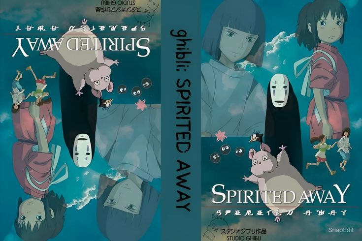
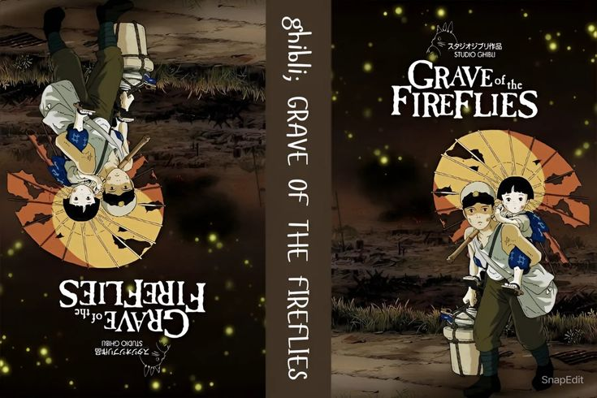
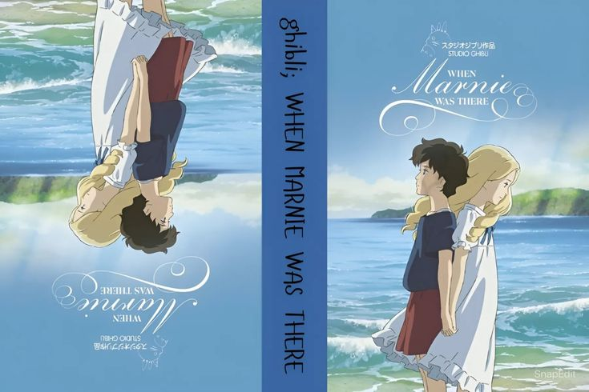
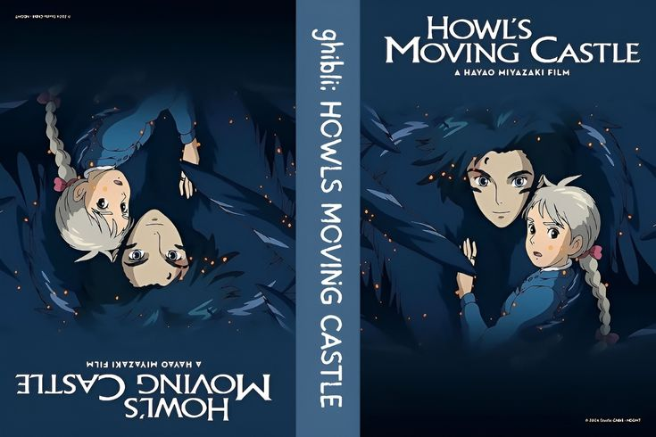
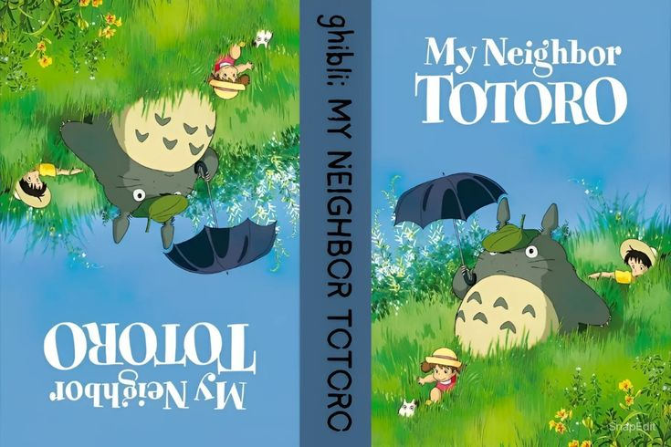
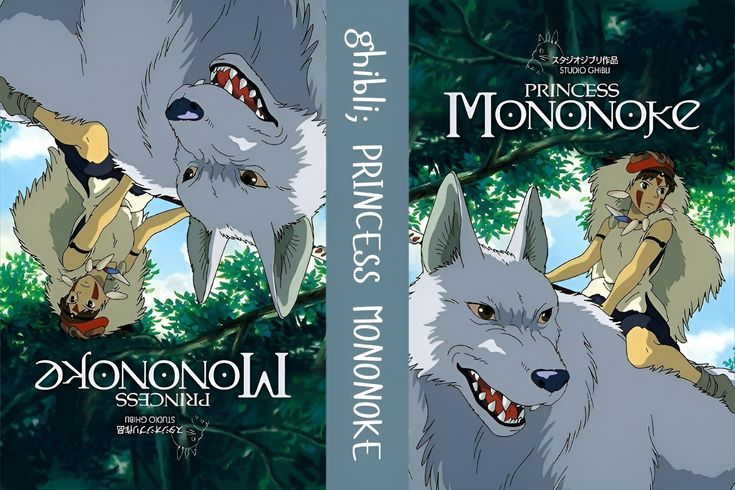
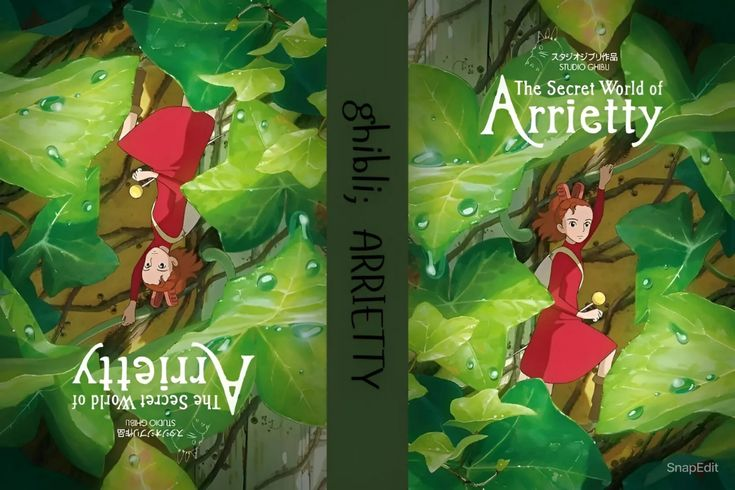
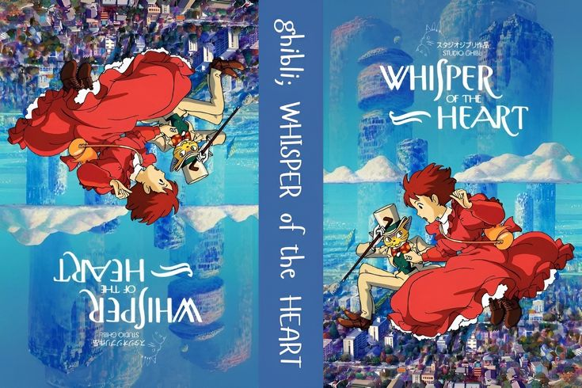
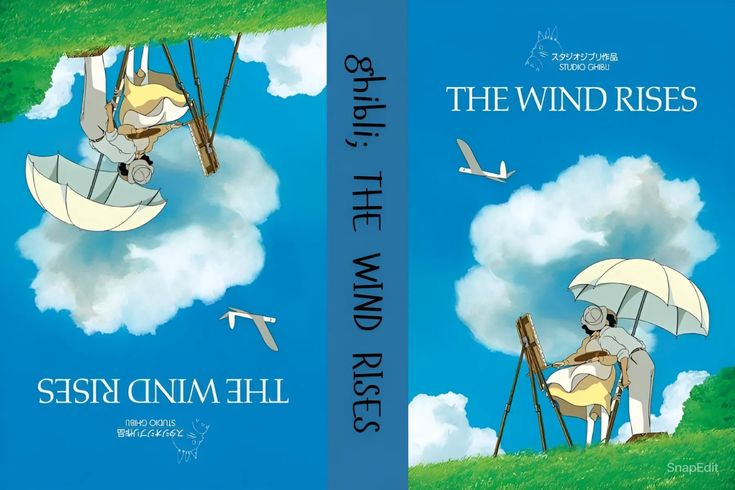

Spirited Away
Chihiro's family is moving to a new house, but when they stop on the way to explore an abandoned
village, her parents undergo a mysterious transformation and Chihiro is whisked into a world of
fantastic spirits ruled over by the sorceress Yubaba. Put to work in a magical bathhouse for spirits
and demons, Chihiro must use all her wits to survive in this strange new place, find a way to free
her parents and return to the normal world. Overflowing with imaginative creatures and thrilling
storytelling, Spirited Away became a worldwide smash hit, and is one of the most
critically-acclaimed films of all time.
Watch Now

Grave of the Fireflies
As the Empire of the Sun crumbles upon itself and a rain of firebombs falls upon Japan, the final
death march of a nation is echoed in millions of smaller tragedies. This is the story of Seita and
his younger sister Setsuko, two children born at the wrong time, in the wrong place, and now cast
adrift in a world that lacks not the care to shelter them, but simply the resources. Forced to fend
for themselves in the aftermath of fires that swept entire cities from the face of the earth, their
doomed struggle is both a tribute to the human spirit and the stuff of nightmares. Beautiful, yet at
times brutal and horrifying.
Watch Now

When Marnie was there
When Marnie Was There (2014) is a beautifully emotional animated film by Studio Ghibli, directed by
Hiromasa Yonebayashi. It follows a lonely, introverted girl named Anna who is sent to the
countryside for health reasons. There, she discovers an abandoned mansion and meets a mysterious
girl named Marnie. As their friendship deepens, Anna uncovers surprising truths about Marnie—and
herself.
Watch Now

Howl's Moving Castle
Howl’s Moving Castle (2004) is a magical fantasy film directed by Hayao Miyazaki and produced by
Studio Ghibli. It follows Sophie, a young woman who is transformed into an old woman by a witch's
curse. In her search for a cure, she encounters the mysterious and charming wizard Howl and takes
refuge in his walking, mechanical castle.
Watch Now

My Neighbor Totoro
My Neighbor Totoro (1988), directed by Hayao Miyazaki, is one of Studio Ghibli’s most beloved and
iconic films. It tells the story of two young sisters, Satsuki and Mei, who move to the countryside
with their father while their mother is in the hospital. There, they encounter friendly forest
spirits, including the gentle and magical Totoro.
Watch Now

Princess Mononoke
Princess Mononoke (1997), directed by Hayao Miyazaki, is an epic fantasy adventure set in a mystical
world where nature and industry clash. It follows Ashitaka, a young prince cursed by a demon, who
journeys to find a cure and becomes caught in a fierce conflict between the forest gods and Lady
Eboshi, leader of an industrial settlement. In the midst of this, he meets San, a fierce girl raised
by wolves, known as Princess Mononoke.
Watch Now

The Secret World of Arrietty
The Secret World of Arrietty (2010), directed by Hiromasa Yonebayashi and based on The Borrowers by
Mary Norton, is a gentle and heartwarming Studio Ghibli film. It tells the story of Arrietty, a tiny
"Borrower" who lives secretly with her family beneath the floorboards of a human house. Her life
changes when she is discovered by Shō, a sickly human boy.
Watch Now

Whisper of the Heart
Whisper of the Heart (1995), directed by Yoshifumi Kondō and written by Hayao Miyazaki, is a
heartfelt coming-of-age story about Shizuku, a curious and book-loving teenage girl. When she
discovers that all the books she borrows from the library were previously checked out by someone
named Seiji, her curiosity leads to a meaningful connection—and a journey of self-discovery.
Watch Now

The Wind Rises
The Wind Rises (2013), directed by Hayao Miyazaki, is a poignant and visually elegant historical
drama inspired by the life of Jirō Horikoshi, the engineer behind Japan’s World War II fighter
planes. The story follows Jirō’s lifelong dream of building beautiful aircraft, set against the
backdrop of war, natural disasters, and personal loss.
Watch Now